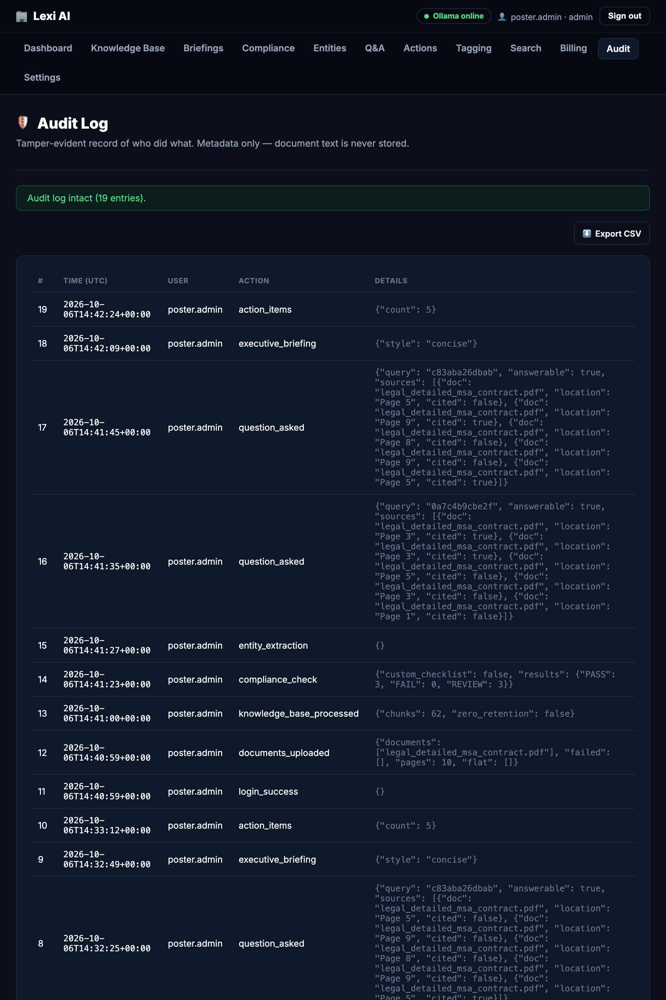
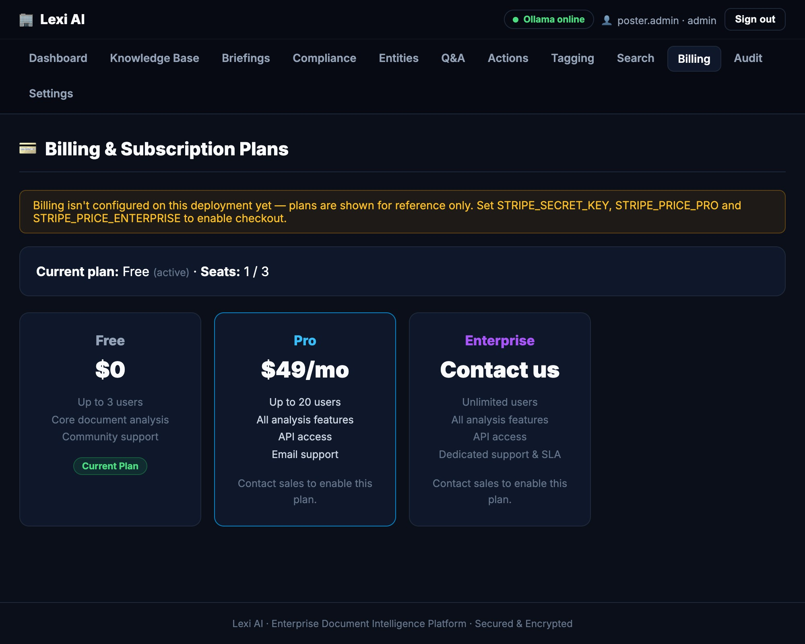

Why we built Lexi AI, how it works, and how it compares with the alternatives.
Contracts, SOPs and reports pile up faster than anyone can read them. Pasting them into a general chatbot means sending sensitive files to a third party, getting answers you can’t check, and leaving no record of who asked what.
Bring the model to the documents, not the documents to the model. Retrieve the right passages first, let a local LLM answer only from them, cite and verify every claim — and log every action.
PDF · DOCX · XLSX · PPTX · CSV · EML · audio (Whisper)
Upload validation, prompt-injection scan, true page provenance
NLTK clean-up, 3-sentence overlapping chunks
MiniLM embeddings → FAISS vectors, plus a BM25 keyword index
Blend both scores → top-5 passages with page and relevance
Llama 3.2 3B via Ollama answers only from the passages; refuses below a threshold
| What matters | Reading it yourself | A general-purpose cloud chatbot | Lexi AI |
|---|---|---|---|
| Searches a whole document set | ◐ Slow and tiring | ◐ Limited by paste size | ✓ Hybrid search over every page |
| Cites document + page you can check | ✓ By hand | ✗ Rarely verifiable | ✓ Numbered sources, page, relevance |
| Says “not found” instead of guessing | ✓ Human judgement | ◐ Often answers anyway | ✓ Similarity threshold95% balanced accuracy at a tuned threshold (Poster 1) |
| Documents stay on your machine | ✓ Yes | ✗ Sent to a provider | ✓ Local LLM, optional zero-retention |
| Tamper-evident record of who did what | ✗ Manual notes | ✗ Not by default | ✓ Hash-chained audit log |
| Repeatable compliance checklist | ◐ Checklists by hand | ◐ Ad-hoc prompts | ✓ PASS / REVIEW / FAIL + verified quotes |
| Team roles, API and billing | ✗ — | ◐ Account-level only | ✓ Roles, API keys, seat-based plans |
Local model, optional zero-retention mode, and an audit log that stores metadata only — never document text.
Inline citations, shown confidence, verbatim-quote checks — and a human review lane when the model can’t prove it.
Roles, API keys, database migrations, seat-based billing and a CI-tested codebase.
A hash chain flags any edit to history. Real log from our demo run: 19 entries, chain intact; details are metadata only.

Free, Pro and Enterprise tiers with seat limits. Stripe checkout switches on when keys are configured; shown here in its unconfigured state.

Cited Q&A · hybrid search · briefings · compliance · entities · action items · ANN tagging · roles & audit log · billing
Single sign-on (SSO) · multi-tenancy for many organisations
Hosted deployment · monitoring · optional hosted-LLM tier